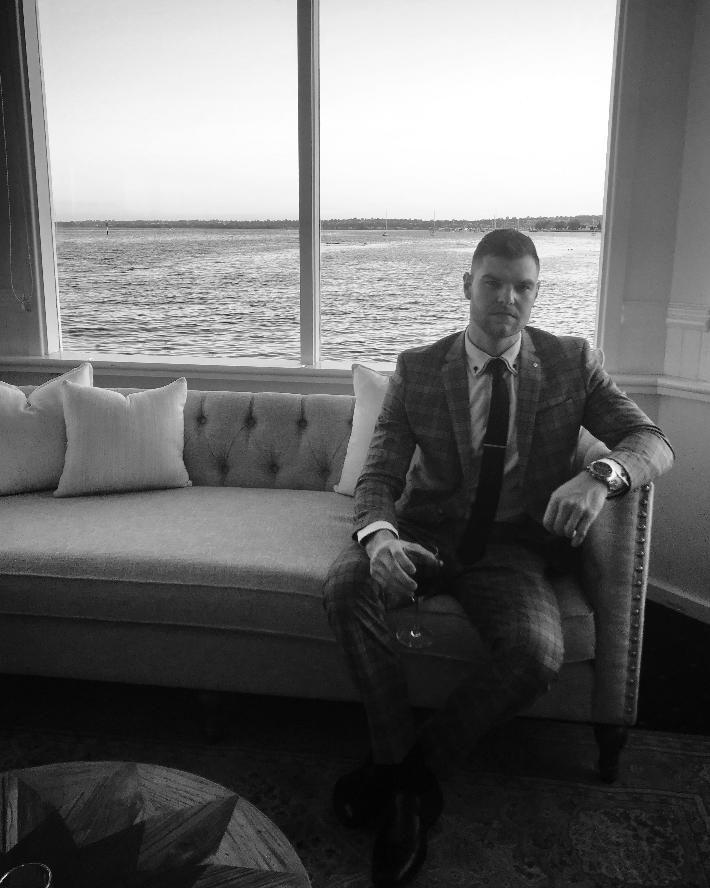

Clear calls. Real build discipline.
The work lives at the intersection of brand presence, interface quality, and systems that can actually carry the load.
About Bryce
I design and build digital work that reads clearly, holds up underneath, and stays founder-led from the first direction call through the finish.
The work lives at the intersection of brand presence, interface quality, and systems that can actually carry the load.
Foundation
I care about how the work feels in the first three seconds and how it behaves once people start using it. That usually means stronger hierarchy, fewer weak decisions, and more attention to what happens below the visual layer.
BryceHuston.com is the personal brand surface. Huston Solutions is the service arm. The standard stays the same across both.
Where I focus
Snapshot
What Matters
The best work carries both.
Stronger hierarchy, cleaner language, and less filler between the idea and the user.
Spacing, motion, responsiveness, and polish all need to feel authored, not assembled.
Travel, diving, and perspective outside the screen keep the brand from feeling flat or overly online.
How I Work
Less dilution. Better follow-through.
Shorter loops, clearer tradeoffs, and fewer handoffs between the thinking and the build.
Typography, pacing, motion, and system decisions are part of the foundation, not cleanup.
The work should still feel considered on mobile, in motion, and once the real content shows up.
Outside Work
Travel, diving, and the better life moments live there on purpose. It adds depth without turning the site into a dump of everything I have ever photographed.

